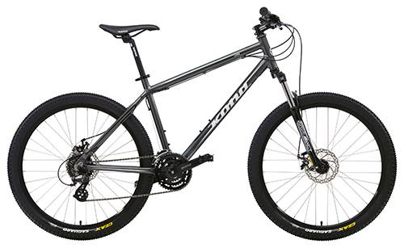

Велосипе́д (стар. фр. vélocipède, от лат. vēlōx «быстрый» и pēs «нога») — колёсное транспортное средство, приводимое в движение мускульной силой человека через ножные педали или (крайне редко) через ручные рычаги. Наиболее распространены велосипеды с двумя колёсами, но бывают и трёхколёсные велосипеды. В современном мире также используют электропривод для усиления мускульной силы человека. Правила дорожного движения России определяют велосипед как «транспортное средство, кроме инвалидных колясок, имеющее два колеса или более и приводимое в движение мускульной силой людей, находящихся на нём».[2]